Free to forkNo licence and no copyright claim: build this game under your own name, or lift one idea from it. Why?
Game overview
AAL Trash Miner is a physics game about a strangely satisfying job: driving a bulldozer into a sea of garbage and shoving it, thousands of pieces at a time, into the chute where it belongs.
The garbage is the old world's. Centuries of it lie buried under hills that nobody builds on, slowly poisoning the land around them. Every load you push in is reprocessed into raw material, and every landfill you clear, sector by sector down to its foul core, turns back into land the town can use.
It grew out of the ads for Zombie Miner, a mobile game where a bulldozer pushes ore and gems into a grinder for coins. Reactorcore loved the push and nothing around it: a zombie mining gold to buy a bigger bulldozer to mine more gold, across a fixed run of handmade maps. This keeps the push and gives it a reason. It's set in Reactorcore's AAL universe.
Target audience
Players who love the tactile pleasure of cleanup and pushing games, the plow that bunches up a heap and the heap that spills over, and who are tired of games that wrap that pleasure in coin counters and endless upgrades.
They want satisfaction with a point to it: a mess that ends up clean, and a place that ends up better.
Drive and push, on keyboard or gamepad. Nothing to aim and no reflex tests.
Game's purpose
Enjoyment and play: the physical joy of plowing into a sea of loose things and steering the wave.
Meaning: a poisoned hill turned back into land, and a town that gets it back.
Variety: every landfill generated, every core buried with something different.
It deliberately avoids draining rest (no timers, no fail state that wipes a landfill) and the sense of purpose (no greed for its own sake: every job has an end and a reason).
Core concept
Push-and-upgrade games run on an endless greed loop: more gold to buy a bigger machine to get more gold, through a gauntlet of handmade maps that are the same every time.
Here every job has a purpose and an end: a landfill emptied and a town healed. The landfills are generated, and the machines are all yours from the start.
What never ends is the world: the old world buried its garbage everywhere, so there's always another town with a hill.
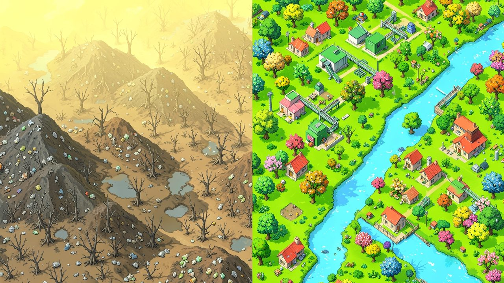
"Every town has one: a hill nobody builds on, where the old world buried what it didn't want."
Lore and story
The old world's leftovers
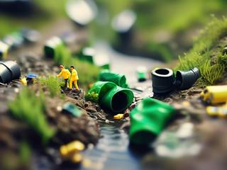
Before the AAL universe's peaceful age, people threw things away. Centuries of it still sit under old Earth and the first colonies: hills of plastic, scrap, rot and drums nobody labelled, leaking into the soil and the water.
Today everything is printed to order and recycled automatically when it wears out, so a landfill is two things at once. It's a mine, because every forgotten tonne is raw material. And it's a wound, because the land around it can't heal while it's there.
The job
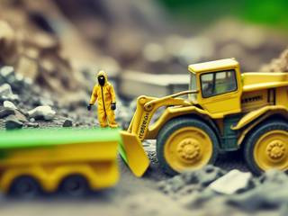
The towns living beside the old dumps ask for their land back, and recovery crews answer: one operator in a sealed hazmat suit, one bulldozer, and a reprocessing plant set up at the edge of the hill. Nobody in this universe has to work. People do this job because it's the most satisfying one going, and because the whole town comes out to watch the hill disappear.
The job right now
A town with a silly name has asked for its hill back. The plant is humming at the foot of it. The first sector is a sea of bags and bottles, and nobody knows what's at the bottom.
Controls and interface
You drive one bulldozer at a time, seen from a three-quarter view above the landfill. The machine is simple on purpose: a box with a blade, so all the attention goes to the heap in front of it.
Drive
W / S
Forward and reverse
A / D
Steer
Shift
Low gear: slower, but pushes harder
Space
Raise or lower the blade
View and information
Q / E, wheel
Turn the camera, zoom
Tab
Sector manifest: what's left and where it goes
M
The region map
Esc
Pause and save
With the blade down you push everything in your path; raised, you can drive over a low heap without disturbing it, or back out of a pile you've buried yourself in. A gamepad plays the same way: one stick drives, the triggers set the blade.
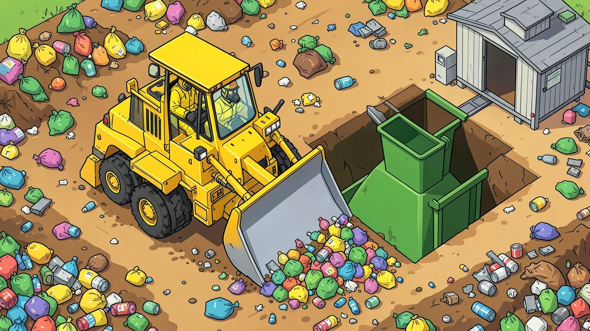
"Every material has its own chute. Push it in by the thousand."
Game layers
01 · Moment-to-moment
Plowing
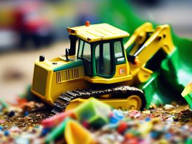
Drive the blade into a heap and feel it bunch up, roll and spill around the edges. Steer the wave to its chute. Clear a lane, build a mountain, then shove the whole thing in at once. Skirt the puddle that's eating the tracks and the slope that's about to slide.
02 · Low metagame
One landfill
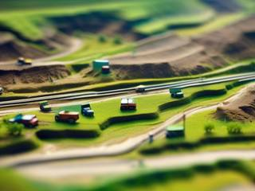
A landfill is a campaign, and each sector of it is a level. The outer rings are loose and light: bags, bottles, packaging. Deeper in, the layers are older, denser and heavier, and the core holds the nastiest and most valuable stuff of all.
The job ends when the core is clean and the hill is gone. The plant you fed all the way down stays behind as the town's recycling center.
03 · High metagame
The region map
Between jobs you look at a region of towns and cities with generated, comically local-sounding names, every one of them starting out grey and sickly around its dump. Each landfill you clear turns its corner of the map green, with a recycling center feeding the town new raw material.
The map is the memento: a picture of the region you healed, growing greener with every job. There are no ranks, titles or medals, by the design's own choice. The region is the record. And beyond it is another region, because the old world buried its garbage everywhere.
04 · Practical game flow
A sector at a time
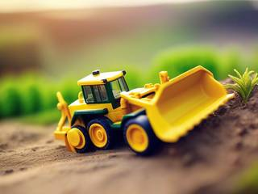
A sector takes ten to twenty minutes, and a whole landfill an evening or two. There's no clock and no quota: the end of each sector is a natural place to stop, and the game saves whenever you pause, so the heap waits exactly where you left it.
Game modes
There's one mode: the recovery work, region by region. It nests:
The regionsEndless: a map of towns turning green, then the next region.
A landfillOne town's hill, from the outer rings down to the core: an evening or two.
A sectorOne level of the dig: ten to twenty minutes.
A heapOne wave of garbage into its chute: a minute or two.
Features and mechanics
The heart of it
Thousands of things to push
The whole game stands on one promise: drive into a sea of thousands of loose objects and every one of them reacts. The ads that inspired it were almost certainly pre-rendered, so the design starts from the opposite end: the push must hold sixty frames a second on an ordinary computer, even when it gets crazy, before anything else gets built.
That's why everything is kept simple underneath. The bulldozer is a box with a blade; each piece of garbage is a sphere or a point with a radius, with simple arcade physics, dressed up in low-poly models of bags, drums, tyres and scrap. Pieces that have settled go to sleep until something touches them, and only the heap in front of the blade is fully awake. If even that can't hold, the fallback is a different way of moving things that still feels physical, never a smaller heap.
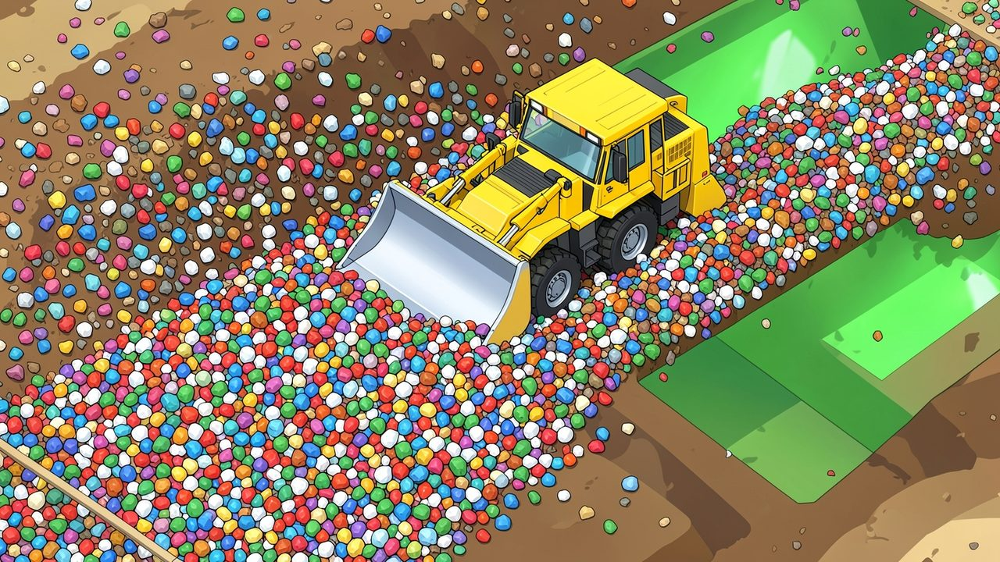
"Every chunk is its own physics object, and the blade moves thousands at once."
Sort as you plow
Every material has a chute
The garbage isn't all one thing, and it doesn't all go to the same place. Each material has its own intake at the plant, and each one behaves differently under the blade:
Material
Goes to
Under the blade
Plastics and packaging
The reprocessor
Light and bouncy; a big wave rolls easily and scatters easily
Scrap metal
The smelter
Heavy; needs low gear and a straight run
Rot and compost
The digester
Soft and sloppy; spills around the blade's edges
Glass and rubble
The crusher
Grinds along slowly and stays where you leave it
Drums and batteries
The sealed vault
Fragile; burst one and it leaks a puddle you'll have to drive around
Most sectors are a mix, so plowing is also sorting: peel the metal off one side of the heap, shove the bags toward the reprocessor, and leave the drums for a careful trip of their own.
What you dig builds the dig
The plant grows with the job
Zombie Miner's best idea was spending what you pushed on the site itself, and that stays. Material you feed the plant comes back as infrastructure for this landfill: conveyor belts that carry a heap the last stretch, wider and stronger bridges over the pits, intakes moved closer to the face, ramps and shortcuts down into the next layer.
It belongs to the site, not to you. When the landfill is done it stays with the town, and the next job starts with a fresh plant at the edge of a fresh hill. Power rises over a job and falls between them, the way it does for a real crew.
The machine yard
The right dozer for the sector
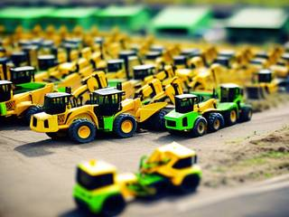
The original game had you climb a ladder of ever bigger bulldozers. Here the whole yard is open from the start: a nimble compact for trenches and buried tunnels, a standard machine, a wide-blade sweeper for open fields of light trash, and a heavy crawler for the dense layers near the core.
Bigger isn't always better. The crawler won't fit the narrow cut through an old scrapyard, and its weight sinks into soft compost. Choosing the machine for each sector is part of reading it, not a reward for having played long enough.
What the past leaves on you
Relics and residue
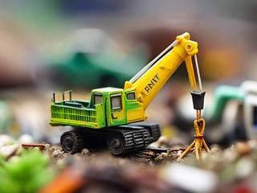
Every landfill buries something peculiar to itself, and you take some of it with you, for better and for worse.
A relic is a piece of the old world worth keeping, a take on the supercores in several of Reactorcore's designs: a crane magnet that tugs scrap toward your blade, an old sweeper's brush that gathers spilled litter. It comes with you to the next jobs and stacks with others, and it wears out after a few.
Residue is what you unleash by opening the hill: a reek that brings scavenging birds to pick at your heaps, oily slime that makes every chunk slippery, a filter that clogs and fogs your view, squalls that turn compost to mud. You got down and dirty, and it takes a few jobs to wash off. It also says, plainly, why burying garbage was a bad idea.
Relics and residue both fade, so the mix you bring to each landfill keeps changing.
No enemies, only the hill
Hazards of the old world
Nothing in a landfill fights back on purpose, but plenty of it is dangerous: pockets of methane that flare when the blade breaks them open, leachate pools that bog down the tracks, slopes that slide when you dig out their foot, smouldering layers that have been burning for a century, and rain that turns the whole sector to sludge.
The deeper you go the worse it gets, which is what makes the core the climax of every job. Getting stuck or burying the machine costs time, never the landfill: a winch truck tows you out and the heap is still there.
Trivia
A zombie, a gold mine and no reason
Reactorcore's notes on the original ad are blunt: a zombie mining gold makes no sense and gives no reason to play, and gold for the sake of more gold isn't a healthy goal. The fix was to keep exactly what made the ad compelling, the feel of pushing a sea of physics objects, and replace everything around it with a reason worth having: clean the place up, give it back, and watch the map turn green.
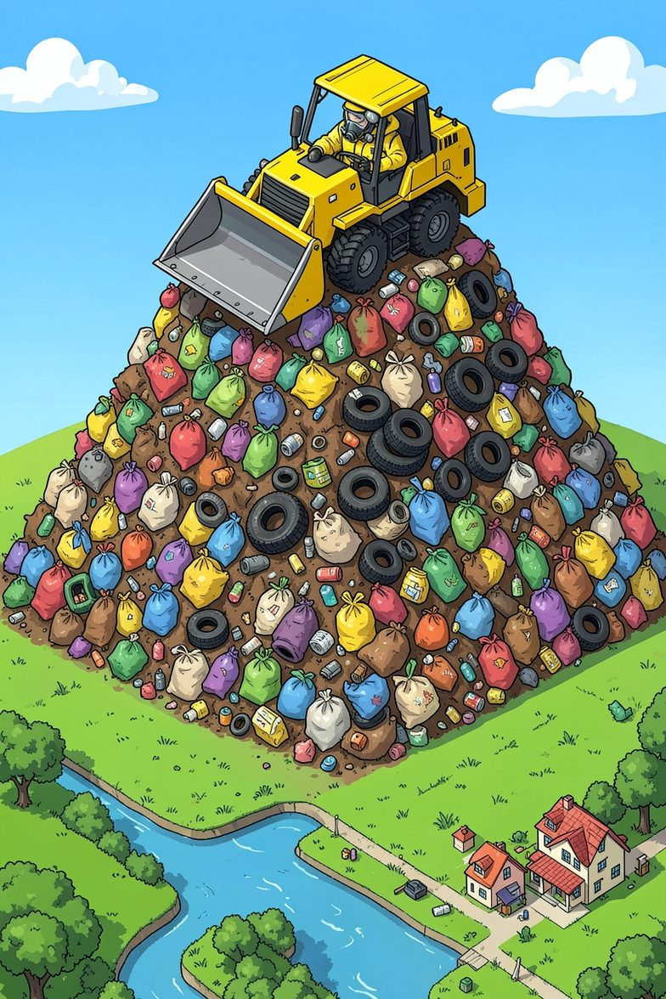
Work order
AAL Trash Miner: Landfill Recycling Bonanza
Site: one landfill, about two centuries old, behind the village of Lower Bogsworth. Contents: unknown. Smell: known.
Assigned: one operator, one bulldozer, one reprocessing plant. The village would like its hill back, and says it will bring snacks.